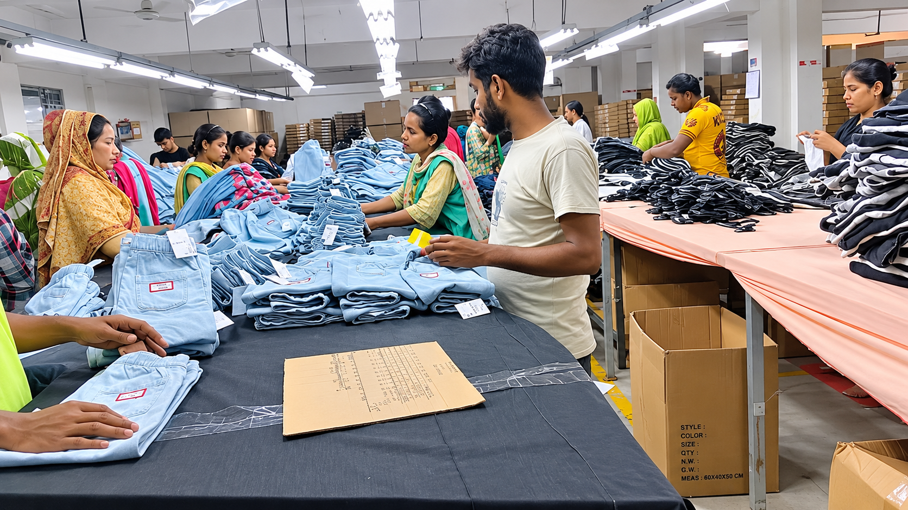

About Zevrauk
Our story, our factory and our standards.
Our story, our factory and our standards.

Zevrauk is backed by J.M Fashion, our own garment factory. One team handles pattern, sewing, finishing and packing.
That means quality is checked by the people who make the garment. We focus on jeans, denim shorts and woven bottoms for men, women and children.
We catch problems on the line, not in the carton.
Seams and topstitching are checked while sewing.
Sample pieces are measured against your spec sheet.
Each garment is checked by hand before packing.